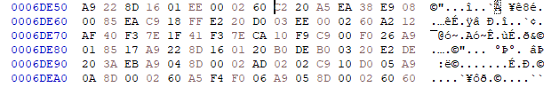
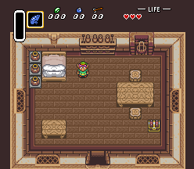
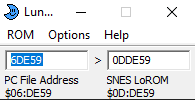

1) Tools/Files Needed
2) Basic ASM Explanation
3) Understanding Original Menu Code
4) Snes Tiles/Tilemap Format
5) Making Custom Menu from B to Z
Tools needed for Zelda3 hacking
Lunar Address - to convert PC Address/Snes address
Asar - 65816 ASM Assembler
YY-CHR - GFX Editor
ZCompress or Lunar Compress - To Decompress/Compress GFX
SnesGFX - to create tilemap/gfx easily
Bsnes+
HXD - Hex Editor
Disassembly + Infos
Basic ASM Explanation
65816 References / Wiki
Here we will go throught the "basics" opcodes for the 65816, Load Values, Change RAM, Conditions, Jump/Goto nothing too fancy or complicated
I will use references to modern programming languages, but knowing a programming language is not really mandatory
On the snes there is a thing called (A) Accumulator and (X,Y) Index Registers to "load" and "store" values in ROM/RAM also the ZERO flag
They are also use to do comparisons for conditions, it might looks complicated at first but this is actually pretty easy here's some basic opcodes :
LDA - Is used to (LD) LOAD a value into (A), it can be used on a ROM Address, Ram Address, Constant value, this is probably the most used opcode
ASM :
LDA #$08 ;Load a Constant value of #$08 in the (A)ccumulator
Pseudo Modern Language :
var A = 08; //Load value 08 into variable A
STA - Is used to (ST) STORE (A) value into a RAM address
ASM :
STA $1000 ; Store A value into Address $1000
Pseudo Modern Language :
var Address1000 = A; //set Address1000 variable on A value;
CMP - (CoMPare) allow you to make a comparison between (A)ccumulator and an address or Constant
ASM :
LDA #$08 ; Load Value #$08 into (A)ccumulator
CMP #$04 ; Compare #$04 with (A)ccumulator value IF Values are matching ZERO Flag is setted, otherwise it is unsetted like this example
Pseudo Modern Language :
var A = 08; //Set A on value 08
if (A == 04)
BEQ - Branch if Equal, IF the ZERO flag is setted it will branch to the location next to it
ASM :
LDA #$08 ; Load Value #$08 into (A)ccumulator
CMP #$04 ; Compare #$04 with (A)ccumulator value IF Values are matching ZERO Flag is setted, otherwise it is unsetted like this example
BEQ .matching
... ; Not Matching
.matching
... ; Matching
Pseudo Modern Language :
var A = 08; //Set A on value 08
if (A == 04)
{
//matching
}
//not matching
BNE - Branch if Not Equal, IF the ZERO flag is UNset it will branch to the location next to it
ASM :
LDA #$08 ; Load Value #$08 into (A)ccumulator
CMP #$04 ; Compare #$04 with (A)ccumulator value IF Values are matching ZERO Flag is setted, otherwise it is unsetted like this example
BNE .notmatching
... ; Matching
.notmatching
... ; Not Matching
Pseudo Modern Language :
var A = 08; //Set A on value 08
if (A != 04)
{
//not matching
}
//matching
JSL - Jump Subroutine Long allow you to go to a different portion of code in a different bank with the possibility of returning with RTL
JML - JuMp Long allow you to go to a different portion of code without possiblity of returning
the menu code is located in the file equipment.asm open that file preferably with a code editor like VisualStudio Code, Notepad++ etc...
get a pluggin for 65816 syntax i am using Visual Studio Code personally with the syntax highlight "65816 Assembly" by Josh Neta
So lets start trying to understand the menu code this is really well commented so it should not be that hard to find codes
we can scroll down a bit to the Local: section at line 34
; *$6DD36-$6DD59 LOCAL
Local:
{
; Appears to be a simple debug frame counter (8-bit) for this submodule
; Of course, it loops back every 256 frames
INC $0206
LDA $0200
JSL UseImplicitRegIndexedLocalJumpTable
dw ClearTilemap ; $DD5A = $6DD5A*
dw Init ; $DDAB = $6DDAB*
dw BringMenuDown ; $DE59 = $6DE59*
dw ChooseNextMode ; $DE6E = $6DE6E*
dw NormalMenu ; $DF15 = $6DF15*
dw UpdateHUD ; $DFA9 = $6DFA9*
dw CloseMenu ; $DFBA = $6DFBA*
dw GotoBottleMenu ; $DFFB = $6DFFB*
dw InitBottleMenu ; $E002 = $6E002*
dw ExpandBottleMenu ; $E08C = $6E08C*
dw BottleMenu ; $E0DF = $6E0DF*
dw EraseBottleMenu ; $E2FD = $6E2FD*
dw RestoreNormalMenu ; $E346 = $6E346*
}
This section is the Main function of the menu what is gonna happen at every step basically, so at first when you press start it will start on ClearTilemap
then Init and then BringMenuDown, once it's done scrolling ChooseNextMode then NormalMenu that is the Main loop for the menu code
where you can move cursor around and pick items lets check the routine BringMenuDown first so Ctrl+F in your code editor search for "BringMenuDown:"
; *$6DE59-$6DE6D JUMP LOCATION
BringMenuDown:
{
REP #$20
LDA $EA : SUB.w #$0008 : STA $EA : CMP.w #$FF18
SEP #$20
BNE .notDoneScrolling
INC $0200
.notDoneScrolling
RTS
}
that is a very small routine, you should have a file called Zelda_3_RAM.log in the disassembly folder you can open that, that will help us understanding what is going on here
so first of all we have a REP #$20 that is basically telling the snes change the processor to read/write 16-bits (word) values from A instead of 8-bits (byte)
then we have a LDA $EA so we are loading the value of the address $EA in A to know what is in $EA we will check in the Zelda_3_RAM.log file and search for $EA
$EA[0x02] - (NMI)
BG3 vertical Scroll Register (BG3VOFS / $2112)
so this is loading the scrolling value of BG3 (menu), in (A)ccumulator nothing more next we have
SUB that is not an existing opcode it is a shortened opcode to combine 2 opcodes and should not be used real code here would be SEC : SBC.w #$0008
SEC will set the Carry you can ignore that for the moment, and SBC will Subtract a value from (A)ccumulator, so basically so far what that code is doing is
Load BG3 Vertical Scrolling Value in A, Subtract #$0008 from it, next we have STA $EA that is storing back the scrolling value -8 in $EA because A got 08 removed from it
CMP.w #$FF18 here we are doing a CoMPare to see if scrolling value == #$FF18 which is -232 in decimal,SEP #$20 we set back the processor mode to 8bits
BNE .notDoneScrolling then we Branch if Not Equal -232 to a RTS which is a Return function that will end the menu code for this frame
however when A is reaching -232 the INC $0200 code will be ran before the RTS, which is INCrementing by one the value of an address
$0200 is the position of the jumptable above so next frame we will be in the next subroutine which is ChooseNextMode
so here a small exercice lets say we wanna change the scrolling speed of the menu i will show how to do it with a Hex Editor and with ASM
if you check in the disassembly before the routine you usually have JUMP LOCATION that is the position where that code is located in the ROM
; *$6DE59-$6DE6D JUMP LOCATION
BringMenuDown:
6DE59
so open up your zelda3 rom in a hex editor and make sure your rom is not headered you can use a header removal tool if you are not sure
SNES ROM Utility , All addresses in the Dissembly are PC Address and for Non-Headered ROM
You can use the tool called Lunar Address to convert PC Address to Snes Address and vice-versa, make sure it has the box Include copier header UNCHECKED
and set it on lorom 00:8000 (the first one) we'll come back to this in a moment so in the hex editor
go to the Address 6DE59 by using CTRL+G in the hex editor, you should see something like this :

what you are seeing is pretty much just the actual game code in HEX
C2 20 REP #$20
A5 EA LDA $EA
38 SEC
E9 08 00 SBC #$0008
85 EA STA $EA
C9 18 FF CMP #$FF18
E2 20 SEP #$20
D0 03 BNE .notDoneScrolling (03 means the branch is going 3 byte further)
EE 00 02 INC $0200
.notDoneScrolling
60 RTS
so lets try changing the SBC #$0008 into something else from a hex editor that is very simple all you need to do is edit the byte 08 to something else like 01
becareful tho the code is comparing with a specific value what that means is if you are not decrementing the value by where -232 is not divisible it will infinitely scroll
change that 08 in 01, save file with the hex editor, load your rom into your favorite emulator then press start to open your menu!
if you did it right the menu should scroll down very slowly like that gif

see that's super simple !! now lets do it in ASM
create a new file with your code editor call it main.asm
lorom ; This line is important to tell ASAR our ROM is in lorom mapping so it will write data to the right location in the ROM
org $0DDE59 ; This is where ASAR will know where to write new data in the ROM, The SNES Address is Different than PC Address explanation below
BringMenuDown:
{
REP #$20
LDA $EA
SEC
SBC #$00E8 ;Remove directly the 232 value
STA $EA
CMP #$FF18
SEP #$20
BNE .notDoneScrolling
INC $0200
.notDoneScrolling
RTS
}
First let explain the org function that's used by ASAR to know where to write code/data in the ROM it's followed by an address
normally we would want that code written at the position 6DE59 since that's where we go in a hex editor to see that code but on the snes
the addresses are not mapped the same basically to keep it simple in a PC BANK you have 65536 (0x10000) bytes, on snes only 32768 (0x8000) bytes
so you need to convert that PC Address into Snes Address and we can use the tool Lunar Address for that with copier header checkbox unchecked and LOROM checked
you enter the PC Address on left side and it give you the SNES Address on right side screen here :

IMPORTANT make sure your ROMs extension are .sfc, ASAR will not recognize properly .smc
ok so now that we have our ASM file we need to build it into the rom so we need to run ASAR on it there are multiple easy way of doing it
i personally put Asar.exe, VanillaROM.sfc, main.asm files in a same folder and use a .bat file with instructions like this
copy "VanillaROM.sfc" "Patched.sfc"
asar.exe main.asm "Patched.sfc"
pause
save that file as build.bat then all you have to do to build new code into your ROM is run the build.bat file!
if you are getting any error make sure all your files are in the same folder before running the .bat file the build.bat file also need to be in the same folder
what that code will do is copy the VanillaROM.sfc file into a file named Patched.sfc then ASAR will patch the file Patched.sfc with main.asm code
if you did it right you should have a file named Patched.sfc if you test that rom the menu should open instantly because we are removing whole value #$00E8